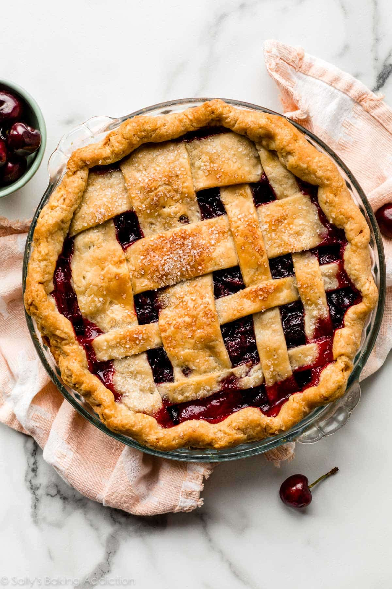

Cherry Pie
This cherry pie recipe is the 1999 American Pie Council's National Pie Championship first-place winner in the Fruit and Berry category.

Ingredients
2 cups all-purpose flour
1 pinch salt
1 cup shortening, chilled
½ cup cold water
2 cups pitted sour cherries
1 ¼ cups white sugar
10 teaspoons cornstarch
1 tablespoon butter
¼ teaspoon almond extract